我們在中午十二時從南海錦山菩提庵登山口開始登上錦山, 山路十分崎嶇難走, 終於在下午一時三十五分到達錦山菩提庵的天然山門 — 雙虹門了! 沿途半個旅客也沒碰到, 也倒是, 路程看似不太長, 但十分難走, 而且其實有公路直達菩提庵, 只是乘車就沒有到達時那興奮、喜悅和滿足, 也沒有「名寺總在深山中」 那感覺而已。
雙虹門 (쌍홍문)
這是錦山一道天然屏障, 一向被稱為天兩門 (천양문), 後來新羅時代的元曉聖師覺得兩個山洞看來好像兩道彩虹, 從此便改稱為雙虹門。
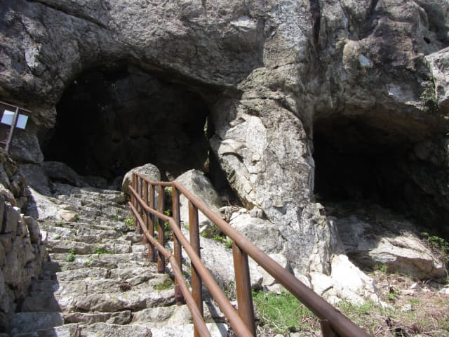
站在雙虹門下, 轉身一望。「嘩~~~~~~~!」 不禁喊了出來, 景色十分壯麗! 縱使再辛苦也是值得啦! 也謝謝太陽伯伯及時出來, 讓我們欣賞到這秀麗風景!
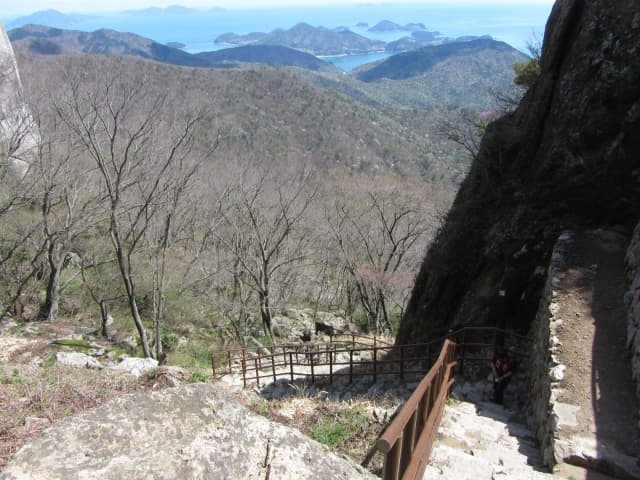
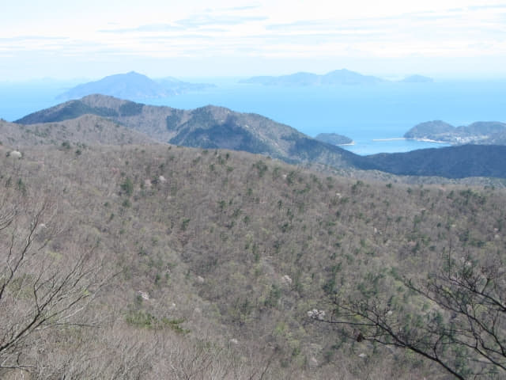
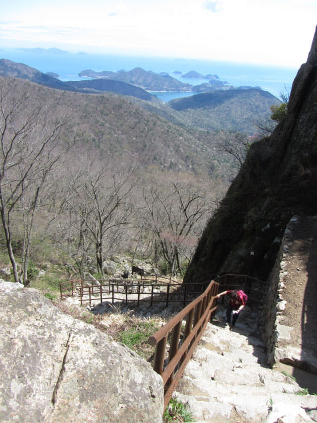
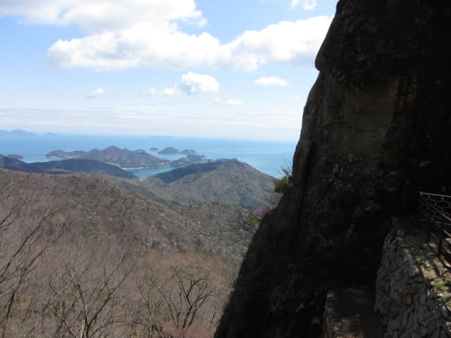
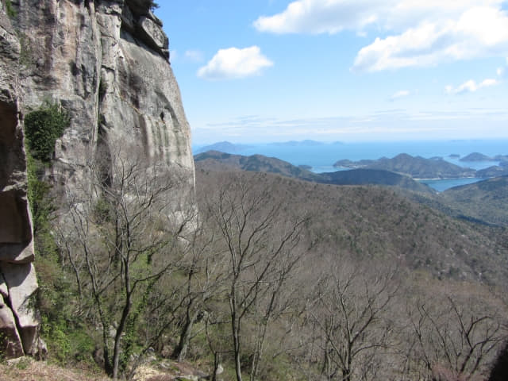
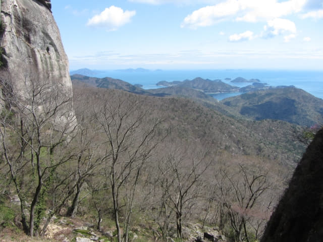
四周都是奇岩怪石。每一巨石都有名稱, 流傳著一個個動人故事。
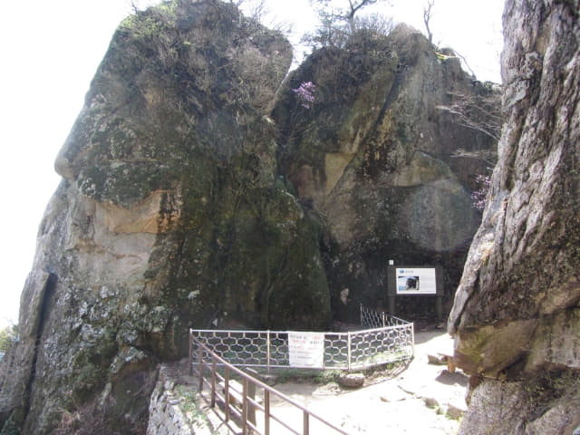
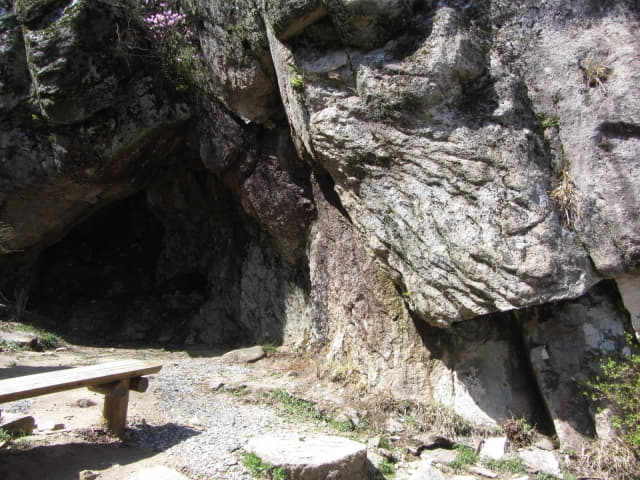

哈哈~~ 她很累, 坐在雙虹門下休息, 在這裡看風景, 彷彿置身於仙境中。隱約聽到山上傳來一些人聲, 錦山菩提庵離這裡不遠了!
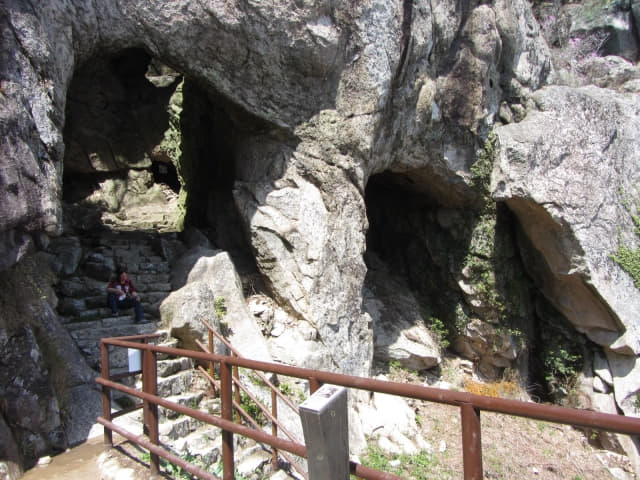
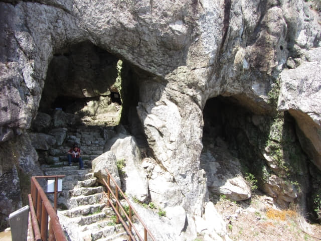
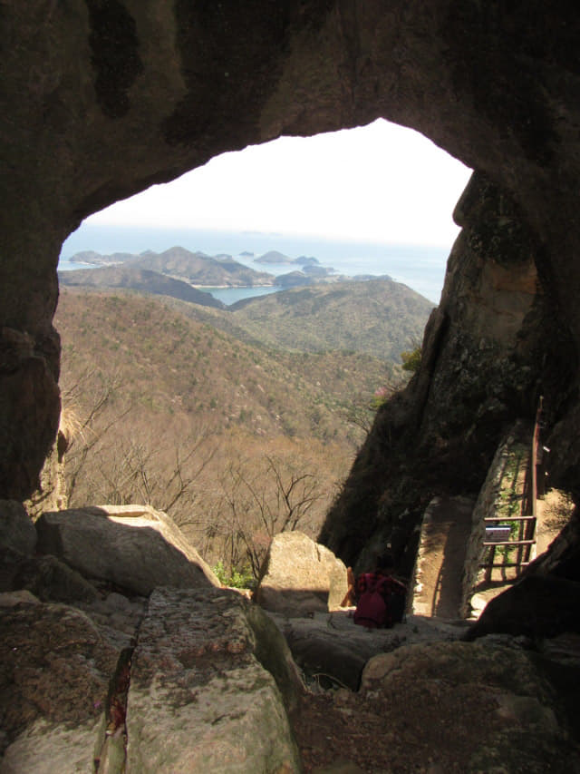
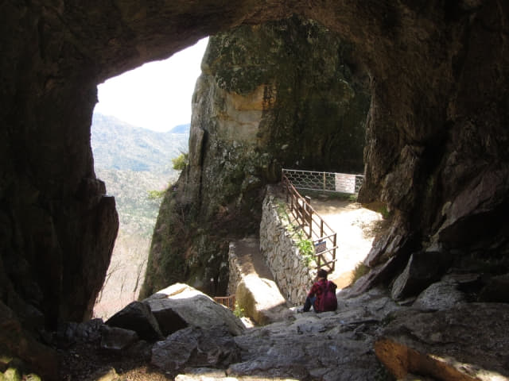
Okay! 繼續最後一段行程。今早下過大雨, 部份石頭頗濕滑的, 小心翼翼的穿過雙虹門。
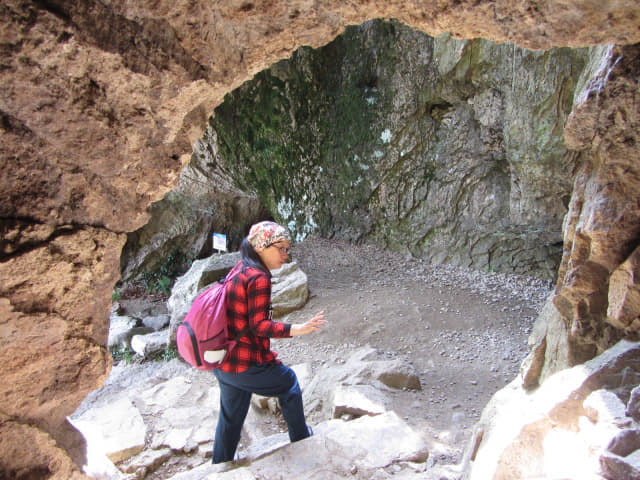
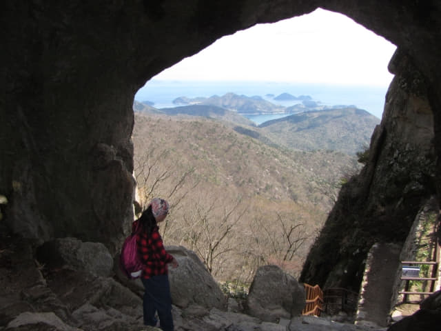
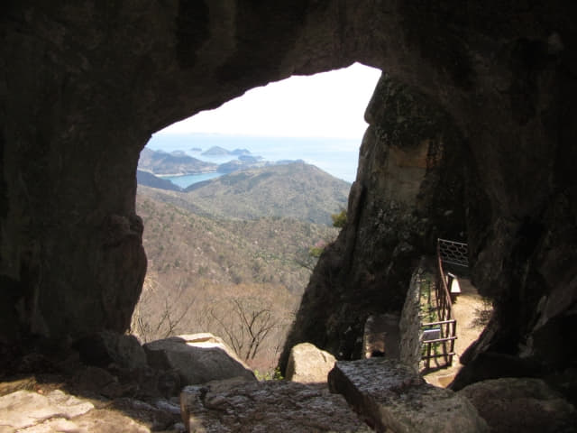

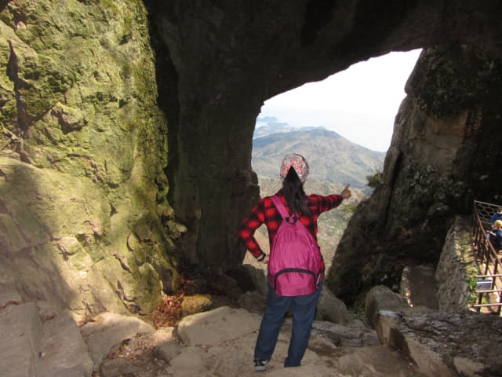
接著抵頭沿山洞中的石階慢慢向上走。山洞很大、很深的, 晚上千萬不要來。
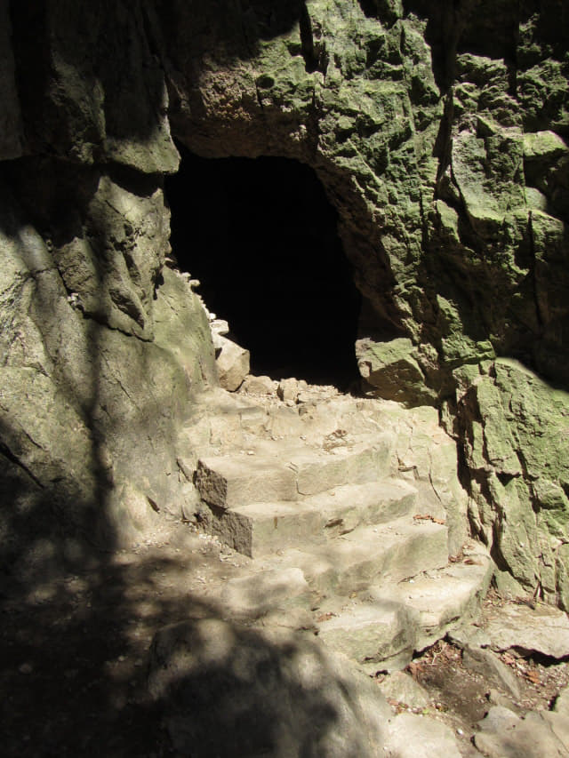
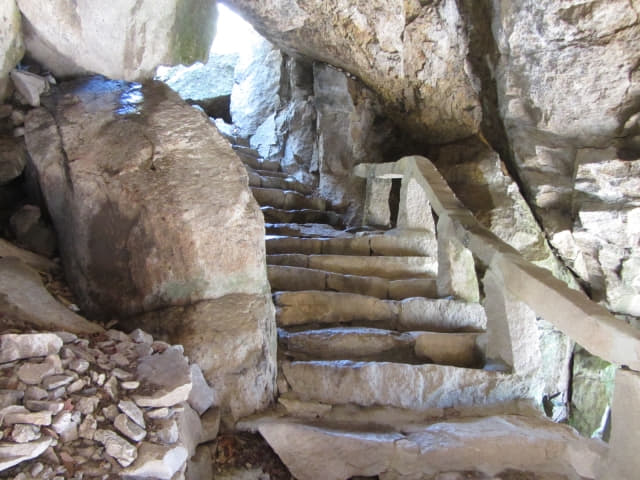
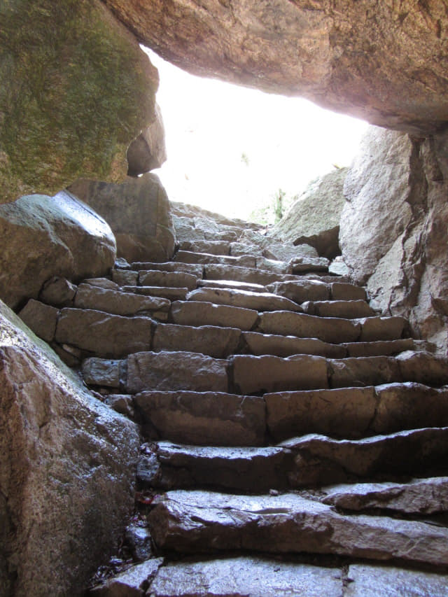
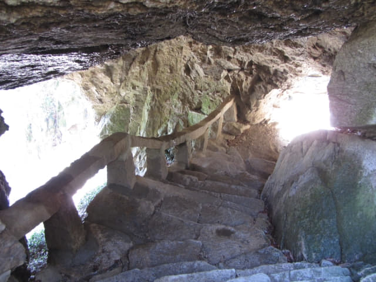

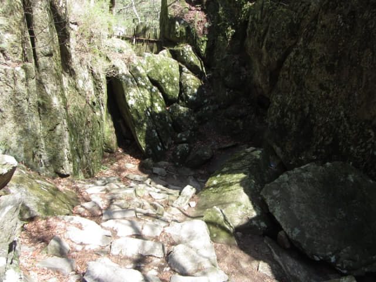
穿過山洞, 迎面仍然是向上的亂石山路。